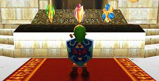

Ocarina of Time cont.
When Ganondorf laid his hands upon the Triforce, the sacred power split into its three parts, and only the Triforce of Power remained in Ganondorf's hands
Without a strong and righteous mind, Ganondorf could not control the power of the gods, and so he was felled by Link's hand. The Sages of the Elements, their power restored by Link in the future, cast the evil incarnation of darkness into the void of the Evil Realm that had been the Sacred Realm before becoming stained by Ganondorf's evil. Princess Zelda herself then seals the gateway, and thus, Ganondorf the dark lord vanishes from Hyrule.

Zelda instructs Link to lay the Master Sword to rest and close the Door of Time, closing the road between times, and she sends him to his original time. After Link goes back to his original time, he retains knowledge about Hyrule's fate. With this information, he visits Princess Zelda in order to prevent such a fate from ever occurring. Link, who traveled through time to save the land, would be forever known in legend as the Hero of Time.
We now follow the fate of Hyrule that knows of young Link's success...

Majora's Mask
Majora's Mask opens with a scene of Link leaving the land of Hyrule on a personal quest. His trip is interrupted by the Skull Kid, an imp possessed by evil contained in Majora's Mask, which he wears after having stolen it from another traveler. The Skull Kid knocks Link unconscious, making him fall off his horse, and steals the Ocarina of Time. When Link awakens, the Skull Kid takes off and leads Link on a chase.
When Link eventually catches up with the Skull Kid, he uses the dark magic of Majora's Mask to transform Link into a Deku Scrub. He then leaves Link, alone in the forest. With limited abilities, Link enters Clock Town where he meets the Happy Mask Salesman. The Mask Salesman reveals that the Skull Kid stole Majora’s Mask from him and that he can return Link to his human form if he finds the Ocarina of Time and Majora's Mask. He warns Link though, that he must leave in three days, and Link must retrieve the Mask and the Ocarina by then. Link then sets off in his Deku form, finding himself in the parallel world of Termina.
Link is able to find the Skull Kid, hanging around the top of the enormous Clock Tower from which Clock Town's name is derived. Also in his search, Link hears rumors and whispers of the Moon steadily growing closer to the Town as Skull Kid pulls it out of its orbit. At midnight on the Final Day before the Mask Salesman's departure, Link is able to reach the top of the Clock Tower for a face off with the Skull Kid. Upon arriving, Tatl (the fairy traveling with Link) demands that the Skull Kid give back Link's Ocarina. Seemingly not hearing, Tael (a fairy traveling with the Skull Kid) delivers an enigmatic warning to Tatl, to find four beings from the "swamp, mountain, ocean and canyon."
The Skull Kid, in response to Tael's outburst, hits the Fairy aside. He then laughs about how even if "they" were to come, they could not stop him. He then points Link and Tatl's attention to the hideous Moon and challenges them to stop it from falling. Taking advantage of this, Link fires a magic bubble, a skill learned earlier, at the Skull Kid, causing him to drop the Ocarina of Time. On picking it up, memories of his departure from Hyrule flood back to Link. In them, Princess Zelda tells him that the Goddess of Time is watching over him. After being snapped out of this reverie by Tatl, Link plays the "Song of Time", and is immediately thrown back to the morning that he first entered Clock Town, three days prior.
Link heads back to the Happy Mask Salesman, who teaches him the "Song of Healing". Playing this song returns Link to his regular self, with the only remnants of his time as a Deku being a Mask, which he can don to become Deku Link once again. After aiding Link, the Mask Salesman asks that Link uphold his part of the bargain and return the Mask that the Skull Kid stole. Upon learning that Link could not recover the Mask, the Salesman again requests that Link recover the Mask, stating that he believes that Link can do it.

To stop the Skull Kid, Link and Tatl work on the only clue they have; the four places stated by Tael. Upon venturing into the Southern Swamp, Link and Tatl find themselves facing a sorrowful and powerful Giant. Tatl then surmises that the Giant was one of the "four" that Tael spoke of, as Link learns the "Oath to Order". The two head to Snowhead Mountain, the cursed Great Bay, and Ikana Canyon to save the other three Giants.
He then ventures to the Clock Tower at the end of the Final Day, summoning the Four Giants with the "Oath to Order" to stop the Moon. Even though the Giants hold back the Moon, Majora's Mask leaves the Skull Kid, who passed out at the Giants' coming, and rises into the Moon. There, the Mask possesses the Moon and attempts to consume all of Termina. Link follows the Mask inside, finding a surreal field, in which there is a tree and five children. After talking to the child who wears Majora's Mask, Link then proceeds to face the demon. After a harsh battle, Link destroys the spirit, and the Moon is destroyed.
When Link comes to the "Dawn of a New Day", he learns that the Skull Kid and the Four Giants had once been friends. The Skull Kid also remarks how Link smells like a kid who taught him a song in the forest, clearly implying that this is the same Skull Kid to whom Link taught "Saria's Song" in Ocarina of Time. The Happy Mask Salesman states that the evil has left Majora's Mask, and then, mysteriously, disappears, bidding Link a fond farewell. Tatl then tells Link that he should get back to his original quest, and the two part ways. The story ends with Link riding off into the forest once more, and "Saria's Song" echoes about a carving of Link, the Skull Kid, the Fairy siblings, and the Four Giants.
Whew...that was a long story. Moving along shall we?